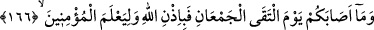
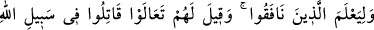
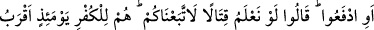
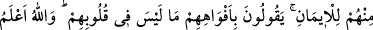
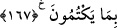

Bu sözler müslümanları şöyle demeye itti: “Nasıl oluyor da müşriklere mağlup
oluyoruz? Biz, Allah’ın Rasûlü’ne ve İslâm dînine yardım ettiğimiz; onlar ise Allah’ı
inkâr ettikleri ve O’na şirk koştukları halde, nasıl oluyor da muzaffer olabiliyorlar?”
Bu soru, durumu kabullenemeyen bir tarzda sorulmakta olduğundan Allah Teâlâ,
Peygamberine, kavminin bu fâsid sorularına şu şekilde cevap vermesini emrediyor: “De
ki: O, kendinizdendir.” Bu mağlûbiyet, ganimet malına tama’ edip o stratejik geçidi
terkederek emre karşı gelmek sûretiyle etmiş olduğunuz o meş’ûm isyandan
kaynaklanmıştır.
“Şüphesiz Allah, her şeye kadirdir.” Emre uyduğunuz zaman, yardım edip, karşı
çıktığınızda yüzüstü bırakmak da O’nun kadir olduğu şeylerdendir. Başınıza gelen tüm
bu belâlar, peygamberine itâatten ayrıldığınız için Allah tarafından gelmiştir.
166, 167. İki birliğin karşılaştığı gün sizin başınıza gelenler, ancak Allah’ın
dilemesiyle olmuştur ki, bu da, mü’minleri ayırdetmesi ve münâfıkları ortaya
çıkarması için idi. Bunlara: “Gelin, Allah yolunda çarpışın; ya da savunma yapın”
denildiği zaman, “Harbetmeyi bilseydik, elbette sizin peşinizden gelirdik” dediler.
Onlar o gün, îmandan çok, kâfirliğe yakın idiler. Ağızlarıyla, kalplerinde olmayanı
söylüyorlardı. Halbuki Allah, onların içlerinde gizlediklerini daha iyi bilir.
Uhud savaşında, sizden ve müşriklerden ibâret olan “iki topluluğun karşılaştığı
gün,” sizin “başınıza gelen, ancak Allah’ın izniyle olmuştur.” Başınıza gelen belâ,
ancak O’nun kazâsı, yani hükmü sebebiyle gelmiştir. Âyet-i kerîmede, Allah’ın
kâfirlerin önünü açması, “Allah’ın izni” olarak isimlendirilmiştir; çünkü bu Allah’ın
izninin gereklerindendir.
“Ve münâfıkları bilsin”, mü’minlerle münâfıkları ayırsın ve bir topluluğun îmanı, bir
topluluğun da infâkı ortaya çıksın diye.
Bu münâfıklar, Abdullah b. Übeyy ve arkadaşlarıdır. Bunlar, Uhud günü, Hz.
Peygamber’in yanından çekip gitmişlerdi. Abdullah b. Harâm (r.a.) kendilerine: “Sizi
Allah’a şikâyet ediyorum; hem kavminizi, hem de peygamberinizi yüzüstü bırakmış
oluyorsunuz.” deyip bunları savaşa teşvik etmiştir. Âyet-i kerîmenin şu bölümü bu
olaydan bahsetmektedir: “Gelin Allah yolunda savaşın, ya da savaşmasanız bile